Data understanding & cleaning
Quality checks, duplicate removal, date conversion, label encoding, MinMax scaling, `time_diff`, and `location_change`.
Output: data/clean_transactions_data.csvAnomaly Detection / Fraud Analytics
Python | EDA | Isolation Forest | Random Forest
End-to-end suspicious banking transaction detection workflow combining data cleaning, exploratory analysis, statistical flags, unsupervised anomaly detection, and supervised modeling.
Project Summary
The project starts from `data/bank_transactions_data.csv`, a dataset with 2,512 banking transaction records and fields such as transaction dates, amounts, merchant identifiers, device information, login attempts, account balance, and related transaction metadata.
The workflow enriches the raw dataset with engineered features, behavioral flags, z-score flags, Isolation Forest labels, and a final anomaly target used to extract suspicious transactions for review.
Workflow
The repository is organized into five notebooks. Each notebook adds a specific layer to the pipeline and writes a downstream data artifact.
Quality checks, duplicate removal, date conversion, label encoding, MinMax scaling, `time_diff`, and `location_change`.
Output: data/clean_transactions_data.csvDistribution checks, outlier review, correlations, hourly activity, and behavioral suspicious flags.
Output: data/clean_transactions_with_flags.csvZ-score calculations on selected numeric fields and binary flags using the `abs(z) > 3` rule.
Output: data/transactions_with_zscores.csvUnsupervised anomaly detection and combined final anomaly flag generation from rule-based and model-based signals.
Output: data/transactions_with_all_flags_final.csv.csvStratified train/test split, RandomForestClassifier, classification report, confusion matrix, and feature importance review.
Output: transactions_anomalies_only.csvEDA
The exploratory phase is used to understand distributions, identify outliers, inspect merchant behavior, and build practical fraud flags before model training.
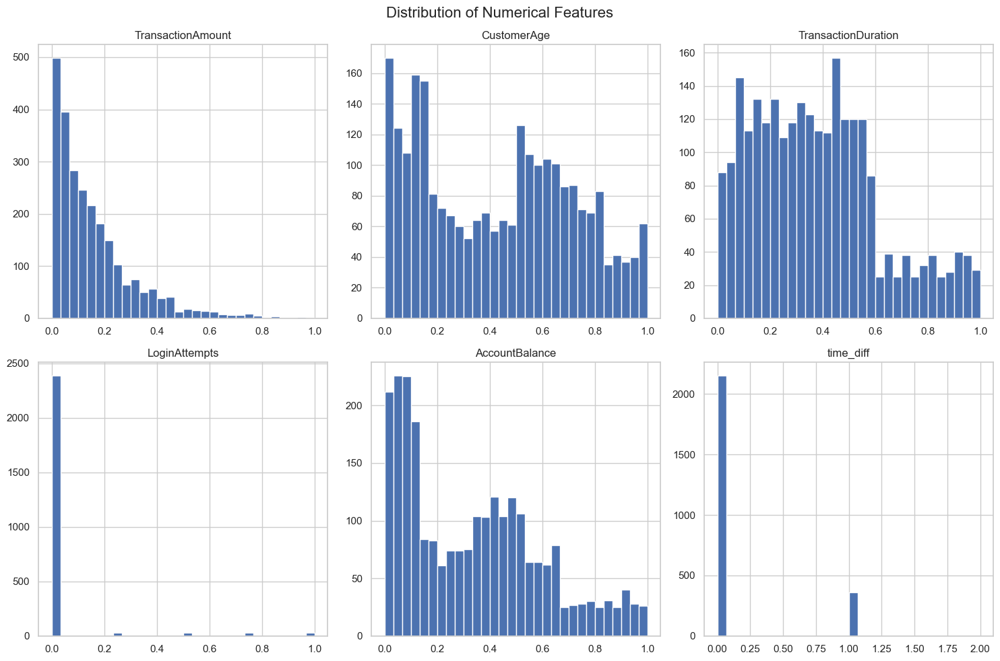
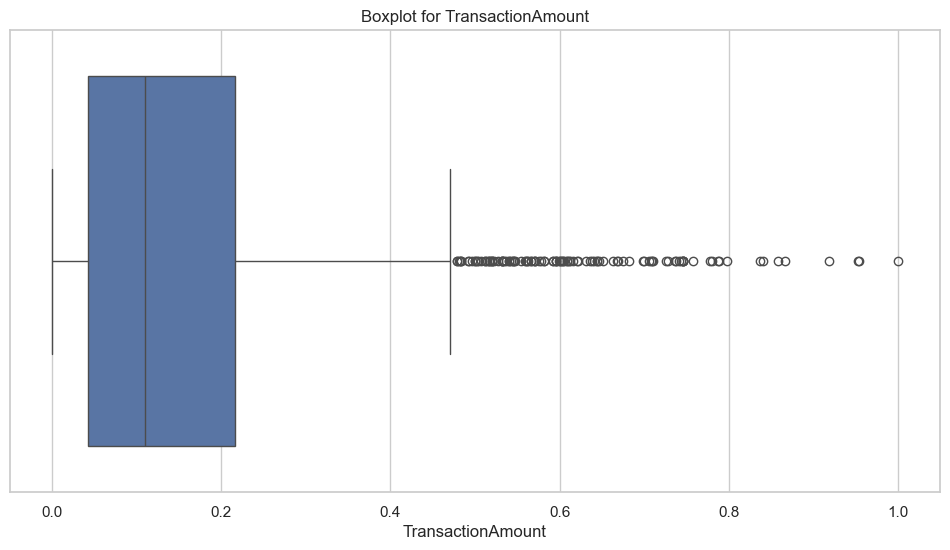
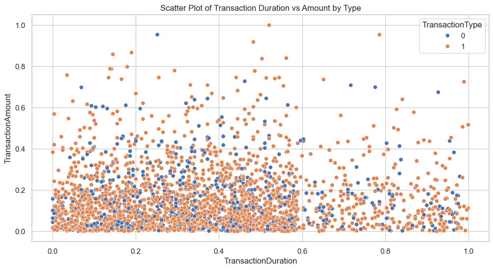
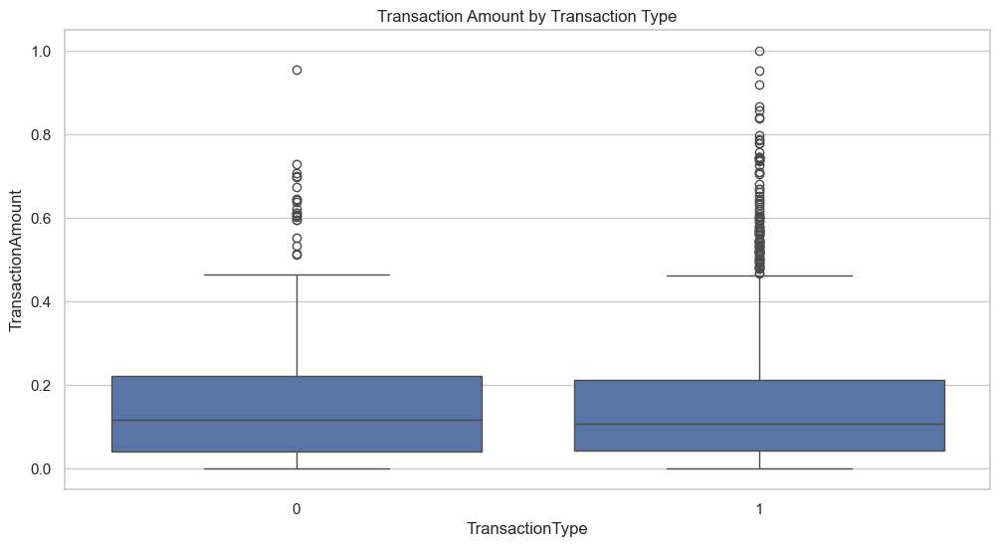
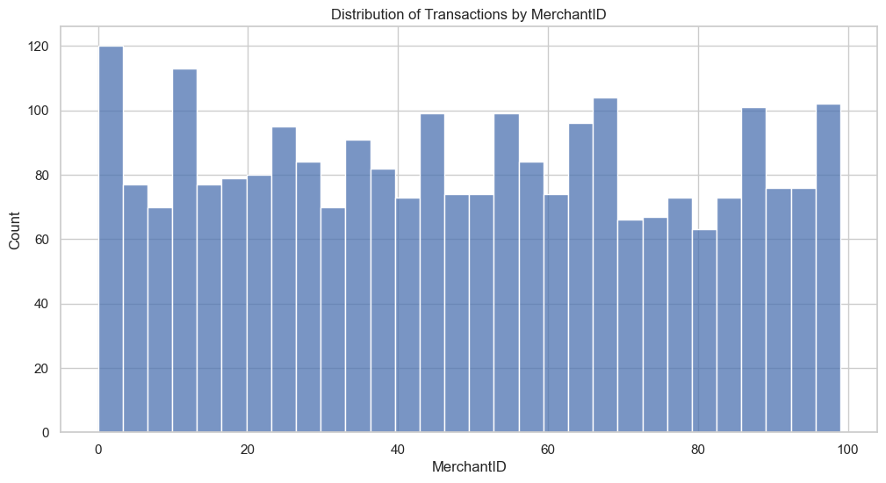
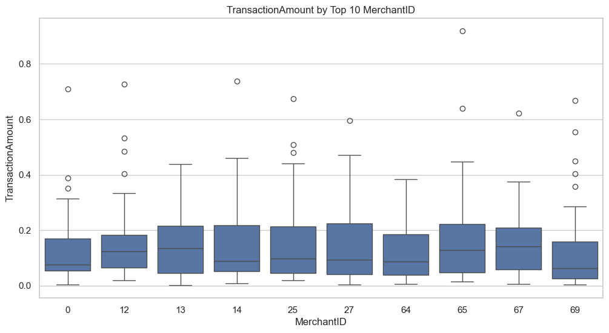
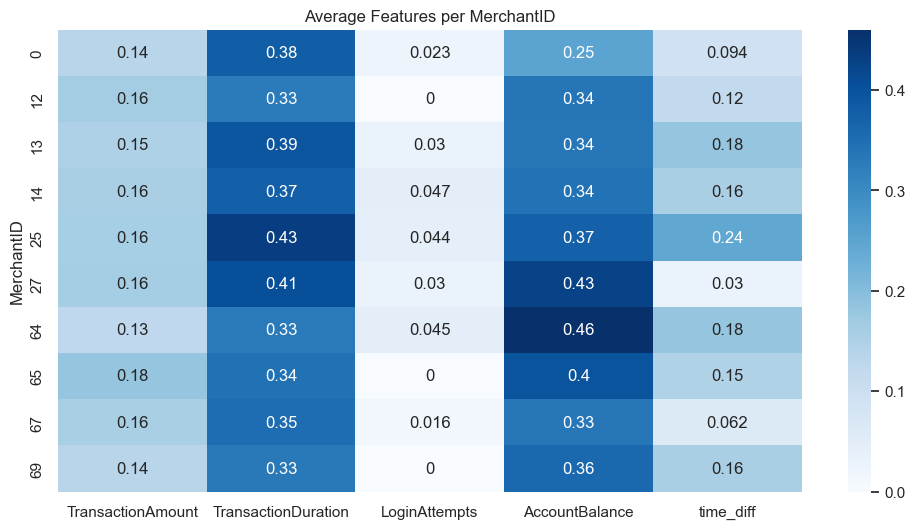
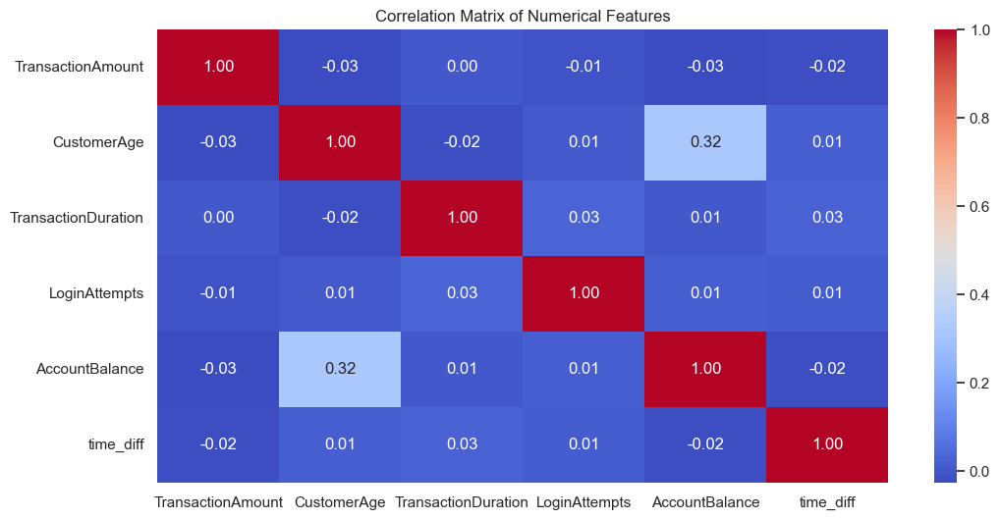
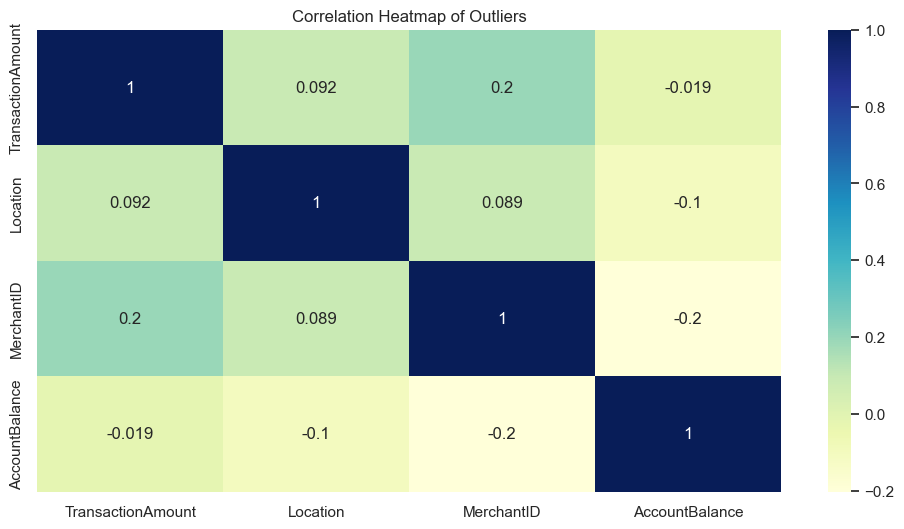
Modeling
The modeling stage combines statistical flags, behavioral rules, unsupervised anomaly detection, and supervised Random Forest classification to produce and validate the final anomaly extract.
iso_model = IsolationForest(n_estimators=100, contamination="auto", random_state=42)
df["isolation_pred"] = iso_model.fit_predict(X)
df["isolation_outlier_label"] = (df["isolation_pred"] == -1).astype(int)| Flag | Precision | Recall | F1 |
|---|---|---|---|
| amount_exceeds_balance | 1.000 | 0.772 | 0.871 |
| suspicious_merchant_flag | 1.000 | 0.153 | 0.266 |
| high_amount_flag | 1.000 | 0.145 | 0.253 |
| many_login_attempts_flag | 1.000 | 0.129 | 0.228 |
| flag_zscore_LoginAttempts | 1.000 | 0.100 | 0.182 |
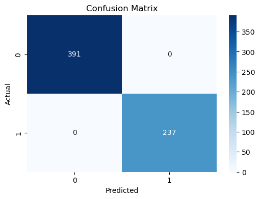
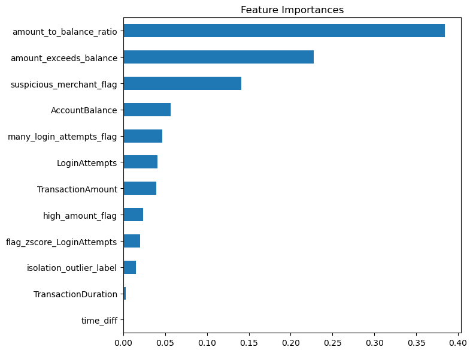
Data Artifacts
Repository
This page summarizes the project workflow and selected results from the fraud detection repository.